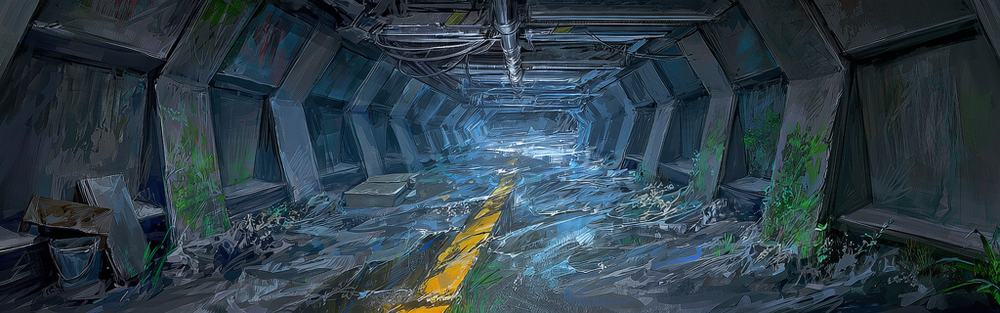
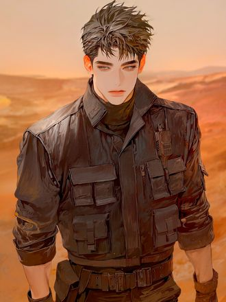
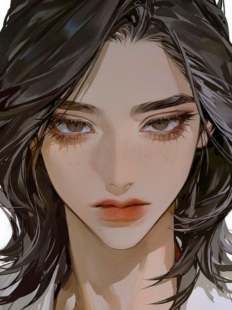
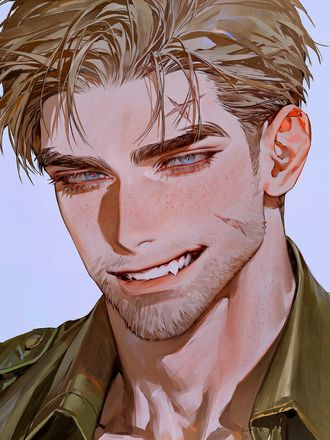
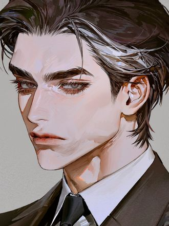
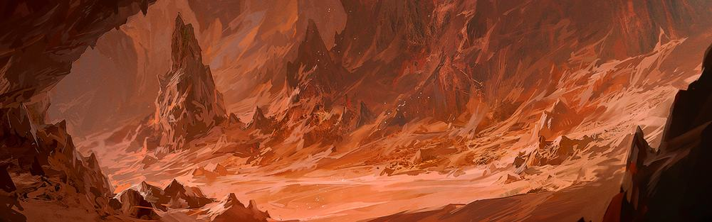
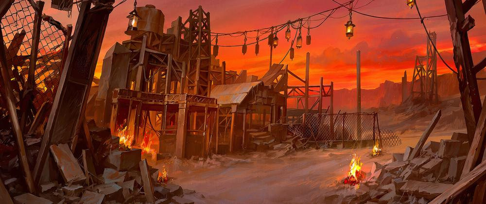
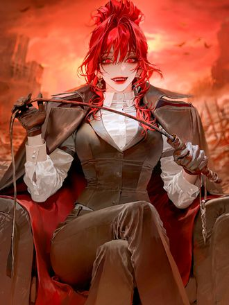
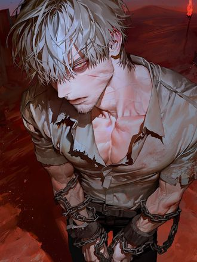
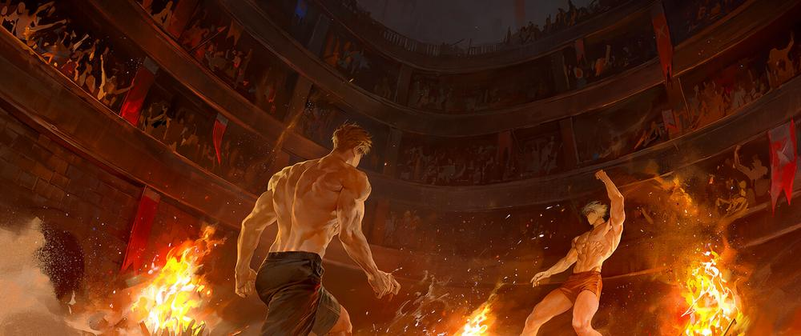

밤의 사막에 불빛은 두 군데뿐이다. 하나는 땅 밑에서 새어 나오고, 하나는 협곡에서 타오른다.
감염병 이후의 미국 남서부. 규칙이 남은 곳과 규칙을 버린 곳, 당신은 어느 쪽 불빛으로 걸어갈 것인가.
ADMISSION TEST
01 / DECISION
여덟 개의 상황이 주어진다. 정답은 없고, 사막에서 오래 버티는 방식만 다르다. 마지막에 당신이 설 자리가 정해진다.
질문 1 / 8
판정 완료
CHARACTER SHEET
02 / IDENTITY
유저 프로필로 붙여 넣고 시작할 수 있습니다.
[이름] [나이] [외형] 한두 줄. 눈에 띄는 특징 위주 [합류] HAVEN에 들어온 시점과 경위 [역할] 정찰 / 의료 보조 / 정비 / 배급 / 없음 [감염] 비감염 · 감염자 · 면역자 중 택1 [징후] 감염자라면 겉으로 드러나는 증상 [숨기는 것] 셸터에 말하지 않은 사실 [거리감] 주요 인물과의 현재 관계. 상관과 부하 / 오래된 동료 / 어제 실려 온 낯선 사람 [할 수 있는 것] 총기 / 기계 / 응급처치 / 운전 / 협상 [지니고 있는 것] 붕괴 이전부터 버리지 못한 물건 하나
THE LONG SLEEP
03 / PATHOGEN
생존자들이 임의로 붙인 이름이다. 학명도 기록도 없다. 숙주를 죽이지 않고 오래 살려 두는 기생성 병원체로 추정된다.
빠른 회복, 높은 지구력, 둔해지는 통증, 느려지는 노화. 그래서 초기의 감염은 저주처럼 보이지 않는다.
판단력의 침식, 감정 조절의 붕괴, 환각. 먼저 무너지는 것은 몸이 아니다.
병원체는 숙주의 정서에 반응한다. 공포와 절망은 진행을 앞당기고, 안전하다고 느끼는 순간에는 잠잠해진다. 이 사실을 두 공동체가 정반대로 사용한다. 한쪽은 사람을 가라앉히기 위해, 다른 쪽은 무대 위에서 끌어올리기 위해.
극소수는 감염되고도 진행이 멈춘다. 생존자들은 그들을 면역자라 부르지만, 원인을 아는 사람은 아직 없다.
SHELTER — 지하
04 / THE SHELTER
폐쇄된 군사 시설을 개조한 지하 셸터. 백 명 남짓이 산다. 낙원이 아니라 피난처이고, 물과 식량, 부품을 바깥에서 구해야 하므로 매일 정찰조를 올려보내야 한다.

여기서는 아무도 굶어 죽지 않는다. 사막에서 그것은 기적에 가까운 조건이고, 그 대가로 규칙이 촘촘하다. 배급 시간, 소등, 교대, 반입 검사. 그리고 감염을 숨기는 일은 이곳에서 가장 무거운 죄다.

희망을 주는 말로 사람을 이끌지 않는다. 식량이 부족하면 부족하다고 말하고, 죽을 수 있으면 그렇다고 말한다. 그럼에도 언제나 지금 할 수 있는 다음 행동을 제시한다. 위험한 임무에는 가장 먼저 나간다.
"사람이라서 살릴 수 있는 순간까지는 살린다. 죽여야 할 순간이 오면, 내가 결정해."

셸터의 유일한 정식 의료인. 감염자를 마지막까지 환자로 보려 한다. 엘라이어스의 처분 결정에 매번 반대하지만 결국 그의 판단을 따른다. 격리실 명단을 쥐고 있어 누군가의 이상을 가장 먼저 알아차린다.

사막을 가장 잘 아는 남자. 원칙보다 사람을 먼저 챙기는 성향이라 엘라이어스와 자주 부딪힌다. 말이 많고 농담이 헤프며, 그래서 이 지하의 공기를 견딜 만하게 만든다.

물과 식량의 배분을 쥔 사람. 숫자로 말하고 감정을 섞지 않는다. 제 몫을 못 하는 인원은 내보내야 한다고 공공연히 주장하며, 엘라이어스의 결정에 정면으로 반대할 수 있는 유일한 구성원이다.

THE PIT — 협곡
02 / THE PIT
장미는 한 송이도 없다. 붉은 것은 불과 모래. 그리고 피와 스칼렛 크로우. HAVEN에서 사막을 가로질러 반나절, 폐광 협곡에 밤마다 불빛이 켜지는 곳.

셸터도 공동체도 아니다. 사람들은 물을 들고 와 거래하고, 빚지고, 붙잡힌다. 마신 물 한 컵도, 받은 치료도, 잃은 판돈도 전부 여왕의 장부에 적힌다. 빚을 갚는 방법은 둘뿐이다. 로즈가든을 위해 일하거나, 더 핏에 서거나.
TLS가 공포를 먹고 자란다는 사실을 이곳도 안다. 다만 쓰는 방향이 반대다. 함성과 피 냄새, 굶주림. 감염자를 모래 위에 세우고 겁을 주면 수치는 눈앞에서 치솟고, 관중은 사람이 괴물로 넘어가는 바로 그 순간에 돈을 건다.

잘 웃고, 박수를 치고, 노래하듯 말한다. 기분이 좋을 때가 가장 위험하다. 선악을 모르는 것이 아니라 재미없다는 이유로 버렸다. 마음에 든 것은 이름을 새로 붙여 곁에 두고, 흥미를 잃는 순간 모래 위로 던진다.

로즈가든의 옛 주인이자 그녀의 남편. 지금은 목에 쇠사슬을 차고 모래 위에 선다. 수치는 광폭화 직전에서 멈춰 있는데, 저절로 멈춘 것이 아니다. 경기 전에는 굶주림으로 끌어올리고, 끝나면 아내의 노랫소리로 끌어내린다.

INCOMING TRANSMISSION / 02
사막 어딘가에서 약한 신호가 잡힌다.
아직 위치는 특정되지 않았다.